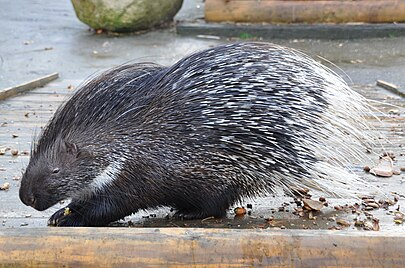

Dikobrazovití (Hystricidae) je čeleď hlodavců z podřádu Hystricomorpha a infrařádu Hystricognathi. Zahrnuje 3 rody s 11 druhy žijícími v jižní Evropě, Africe, jižní a jihovýchodní Asii. Jde o větší hlodavce s podsaditým tělem, krátkýma nohama a krátkým nebo středně dlouhým ocasem. Jejich typickým znakem jsou bodliny nebo ostny, které pokrývají většinu těla. Obývají pouště, savany a lesy. Jde o většinou noční živočichy, kteří přes den přespávají v norách. Jsou to býložravci.
Dikobrazovití žijí v jižní Evropě, severní a střední Africe, jižní a jihovýchodní Asii. Obývají pouště, savany a lesy od úrovně moře až do nadmořské výšky 3 500 m n. m.
Jde o středně velké až velké hlodavce s podsaditým tělem a ocasem, který u menších druhů dosahuje až poloviny délky těla, zatímco u větších druhů je krátký. Jejich tělo měří 350–930 mm, ocas má 25–260 mm. Váží 1,5 – 20 kg. Jejich hlava, tělo a u některých rodů i ocas jsou pokryty ostny nebo bodlinami, které mohou být až 350 mm dlouhé. Celkové zbarvení jde do hněda nebo spíše do černa, ostny jsou často bíle žíhané.
Jde o většinou noční živočichy, kteří přes den přespávají v jeskyních, skalních puklinách nebo norách. Některé druhy jsou společenské – bylo zjištěno až 10 jedinců v jedné noře. Jsou to býložravci, i když bylo pozorováno, že konzumují zdechliny a ohlodávají kosti. V jednom vrhu je obvykle jen jedno nebo dvě mláďata, která se rodí s otevřenýma očima a krátkými měkkými ostny. Přibližně po týdnu začínají ostny tvrdnout; v té době také mláďata opouštějí hnízdo. Dikobrazi se dožívají relativně vysokého věku – u všech tří rodů byl zaznamenán nejvyšší věk přes 10 let. Nejstarším zdokumentovaným dikobrazem na světě byl dikobraz srstnatonosý z pražské zoo, který žil přes 30 let.
| Vědecká klasifikace | |
|---|---|
| Říše | živočichové (Animalia) |
| Kmen | strunatci (Chordata) |
| Třída | savci (Mammalia) |
| Řád | hlodavci (Rodentia) |
| Podřád | dikobrazočelistní (Hystricomorpha) |
| Čeleď | dikobrazovití (Hystricidae) |